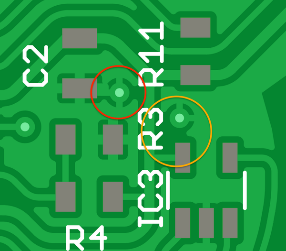
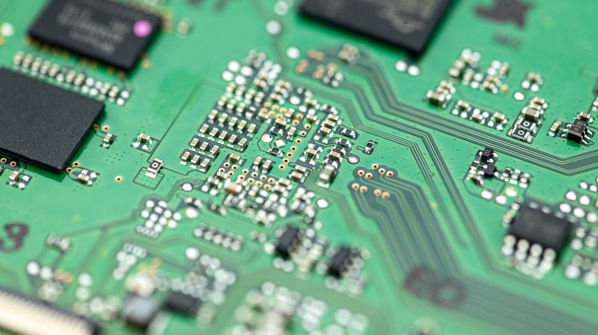

Heat Science
Solder flows toward the hottest part of the joint. This single principle governs every soldering technique.
Why the Iron is Set +100°C Above Melting Point
Your iron tip is not infinite heat. The moment it touches copper, heat flows out of the tip into the pad, lead, and board. The tip temperature drops immediately.
If your solder isn't melting within 2–3 seconds, you need more heat, not more time. Turn up the iron, use a bigger tip, or preheat the board.
Why Solder Flows Toward Heat
Four mechanisms work together:
- Flux activation — flux activates at the hottest point first, removing oxides there first. Clean metal is exposed, solder wets it preferentially.
- Wetting energy — hotter metal forms intermetallic compounds faster. The solder-to-substrate bond is strongest where the metal is hottest.
- Capillary action — optimal joint gap is 0.025–0.127 mm. Solder is drawn into narrow spaces when adhesive forces (solder-to-metal) dominate over cohesive forces (solder-to-solder).
- Marangoni effect — surface tension of molten solder decreases with temperature. Creates a gradient that moves fluid within the molten pool.
The temperature coefficient for molten Sn is −0.094 to −0.151 mN/m per °K. Surface tension of SAC305 is ~548 mN/m — that's 14% higher than SnPb (481 mN/m) and roughly 7–8× the surface tension of water. This is why lead-free doesn't flow as easily.
Surface Tension Numbers
| Material | Surface Tension | Context |
|---|---|---|
| Water (20°C) | 72.8 mN/m | Baseline |
| Molten tin (clean, 300°C) | ~598 mN/m | ~8× water |
| SAC305 | ~548 mN/m | 14% higher than SnPb |
| SnPb 63/37 | ~481 mN/m | Lower = easier flow |
Capillary Flow: Why Solder Fills Joints
Capillary action is the mechanism that pulls solder into through-hole barrels, under QFN pads, along wire strands, and into the gap between a component lead and its pad. It's not just a minor effect — it's what makes soldering work as a joining process. Without capillary flow, you'd have to manually place solder into every hidden surface of every joint.
How It Works
When molten solder contacts a clean metal surface, adhesive forces between the solder and the metal pull the liquid along the surface. In a narrow gap (like the space between a lead and a barrel wall), the liquid is pulled inward from both sides simultaneously. The narrower the gap, the stronger the pull — up to a point.
The capillary force depends on three things:
- Surface tension (γ) — higher surface tension means stronger capillary pull. SAC305 at 548 mN/m has strong capillary force — stronger than SnPb.
- Contact angle (θ) — the wetting angle between solder and the metal surface. Below 90°, capillary action pulls solder inward. Below 30°, the pull is very strong. Above 90° (non-wetting), capillary action pushes solder out — this is why oxidized surfaces repel solder.
- Gap width (d) — narrower gaps pull harder, but only if the gap is wide enough for solder to enter. There's a minimum below which viscosity and oxide films block entry.
For a parallel gap of width d between two wetted surfaces:
P = 2γ·cos(θ) / d
where γ is surface tension, θ is the contact angle, and d is the gap width. For SAC305 with θ = 20° (good wetting) in a 0.1mm gap: P ≈ 2 × 548 × cos(20°) / 0.0001 ≈ 10.3 MPa. That's 100 atmospheres of capillary pressure — enough to pull solder vertically against gravity through a through-hole barrel. This is why solder fills barrels from the bottom up during wave soldering, and why solder wick works (the braided copper channels produce similar capillary forces).
Optimal Joint Gaps
Too tight and solder can't enter. Too wide and capillary force can't bridge the gap. The sweet spot depends on the joint type:
| Joint Type | Optimal Gap | What Happens Outside This Range |
|---|---|---|
| Through-hole barrel (lead-to-hole) | 0.15-0.75mm annular | Tighter: hard to insert lead, solder can't wick in. Wider: solder won't fill the barrel — capillary force too weak. IPC recommends minimum 0.15mm annular ring for solderability. |
| Brazing / lap joint (wire-to-pad) | 0.025-0.127mm | The classic capillary range. Solder is strongly pulled into the gap. Too tight: starved joint. Too wide: gravity wins. |
| QFN thermal pad (under-chip) | 0.05-0.10mm standoff | Paste must melt and spread in a very thin gap. Too much paste: voiding (volatiles can't escape). Too little: incomplete coverage. |
| BGA ball collapse | ~0.2-0.4mm (post-reflow) | The ball melts and collapses to the pad. Surface tension sets the standoff height. Self-alignment pulls the package into position. |
Capillary Flow in Practice
- Through-hole fill from one side — you heat from the top, feed solder from the top, and capillary action pulls solder down through the barrel. This is why you can solder a through-hole joint from one side and get 100% barrel fill — the solder wants to fill the gap.
- Solder wick — braided copper is a bundle of capillary channels. When heated with flux, it pulls solder out of a joint by capillary action. Works because the wick's many tiny channels generate higher capillary pressure than the joint's larger gap.
- Flux under BGA/QFN — when you apply flux around BGA edges, it wicks under the package by capillary action through the gap between balls. This is how you flux a joint you can't see.
- Wire tinning — stranded wire is a bundle of tiny gaps between conductors. Capillary action pulls solder deep into the strand, not just around the outside. This is why tinned wire is mechanically stronger — the solder fills the internal gaps.
- Tombstoning — a failure of unequal capillary pull. When one pad reflows before the other, the capillary + surface tension force on the reflowed side is strong enough to pull a small component upright. It's not just thermal imbalance — it's the physics of capillary force acting on only one end.
Capillary force + surface tension means solder flows preferentially into narrow, clean, hot gaps. Every soldering technique exploits this: you heat the joint so solder flows toward the work (not away from it), you use flux so surfaces are clean (wetting angle low, capillary force high), and you design joints with gaps that invite capillary fill. When solder goes where you don't want it (bridges, wicking up leads away from the joint), it's because you created a more attractive capillary path in the wrong direction.
Thermal Mass: The Ground Plane Problem
A pad connected to a ground plane is a heat sink. Heat pours through the copper faster than your iron can deliver it.
Figure: Thermal relief pattern vs direct connect

Figure: Copper pour with thermal relief on finished PCB

Solutions
- Bigger tip — more thermal mass, more contact area
- Higher temperature — more thermal gradient (carefully)
- Preheat the board — 100–150°C reduces the work your iron has to do
- Thermal relief pads — PCB designer's gift: 3–4 spokes restrict copper cross-section, reducing time-to-reflow by up to 50%
Beginners hold the iron longer when a joint won't flow. After the first few seconds you're just cooking the flux. What works: bigger tip, higher temp, preheat, add flux, clean the tip.